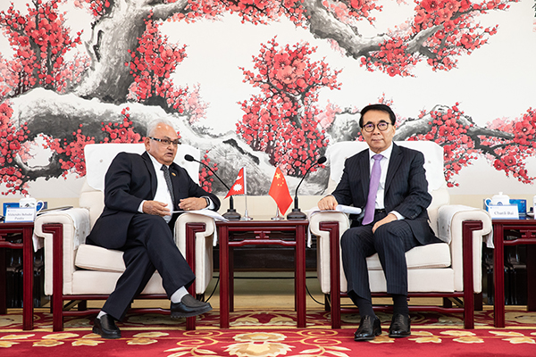
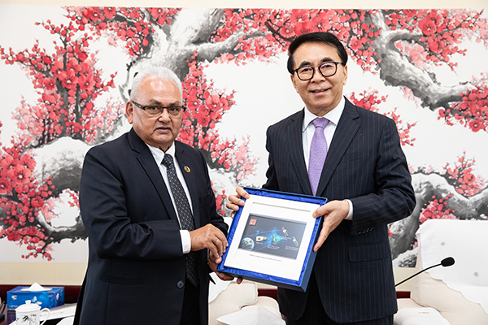

11月10日，中国科学院院长白春礼在京会见了尼泊尔驻华大使马亨德拉·巴哈杜尔·潘迪一行。双方围绕中尼交通廊道，就中尼科技交流合作交换了意见。
白春礼对马亨德拉·巴哈杜尔·潘迪一行表示欢迎，并向尼方介绍了中科院的基本情况以及与尼泊尔的科教合作情况。他表示，中科院与尼泊尔科技界保持着长期友好的合作关系，双方合作近年来发展迅速。2015年，中科院与尼泊尔特里布文大学合作建设了加德满都科教中心，在气候变化、自然资源、生态环境、可持续发展等方面开展了广泛合作。中科院还为尼方培养了大量科技人才，资助约200名尼方青年学生来华攻读博士和硕士学位，资助了50多位青年学者来中科院开展学术交流。此外，在“一带一路”倡议下，中科院与特里布文大学等合作伙伴于2018年联合发起成立了“一带一路”国际科学组织联盟（ANSO），积极推动多边和地区性的科技创新合作。未来，中方愿与尼驻华使馆加强工作联系，持续促进双方友好交流与合作。
马亨德拉·巴哈杜尔·潘迪对白春礼百忙之中会见代表团表示感谢。他指出，科技事业的发展为中国在短期内迅速抑制住疫情、保持经济社会快速发展提供了有力支撑。中科院在其中发挥了非常重要的作用，他对此表示高度赞赏，希望积极促进尼方与中科院开展合作。尼方积极支持“一带一路”倡议，为落实近两年两国领导人互访达成的合作共识，尤其关于共同构建跨喜马拉雅立体互联互通网络的共识，尼方希望重点在气候变化、自然灾害、生态环境、生物多样性、农业等方面与中科院开展合作。
中科院国际合作局、青藏高原研究所、地理科学与资源研究所相关人员参加会见。

会见现场

赠送纪念品